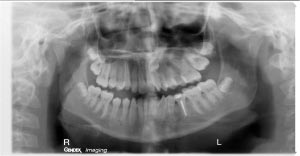

Procedure:
- When the patient is turned in the machine the result is unequal magnification.
- The side of the patient that is closer to the image receptor is less magnified. This side is therefore narrowed.
- The side of the patient that is furthest from the image receptor is more magnified. This side is therefore widened.
- This unequal magnification can be recognized in the image by noting that the posterior teeth on the side furthest from the image receptor are widened and overlap interproximally. Additionally, the ramus is widened as well.
- On the contralateral side, the ramus and posterior teeth are narrowed. The spine may approach or superimpose on the ramus of the narrowed side.
- Please refer to the image below for examples of the above stated errors.

|